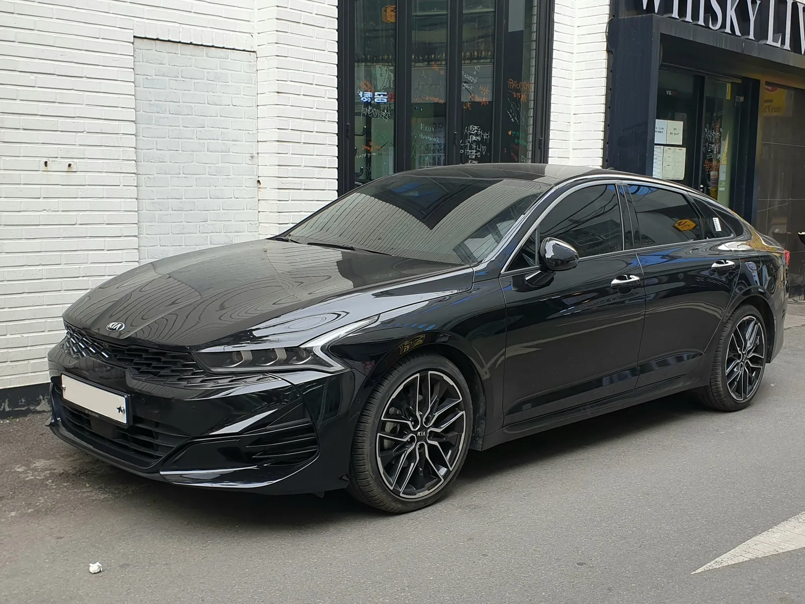
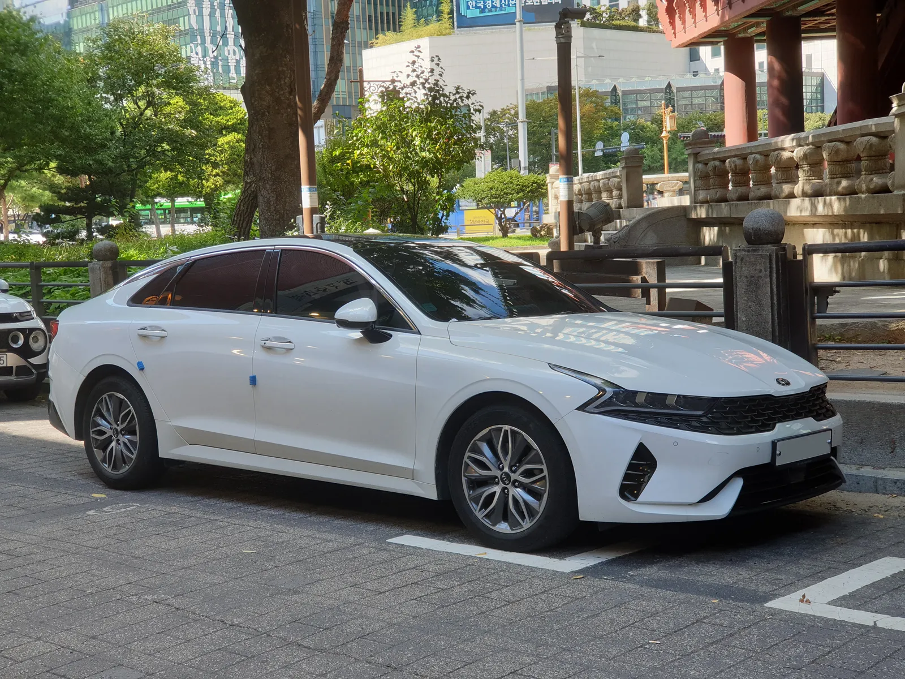
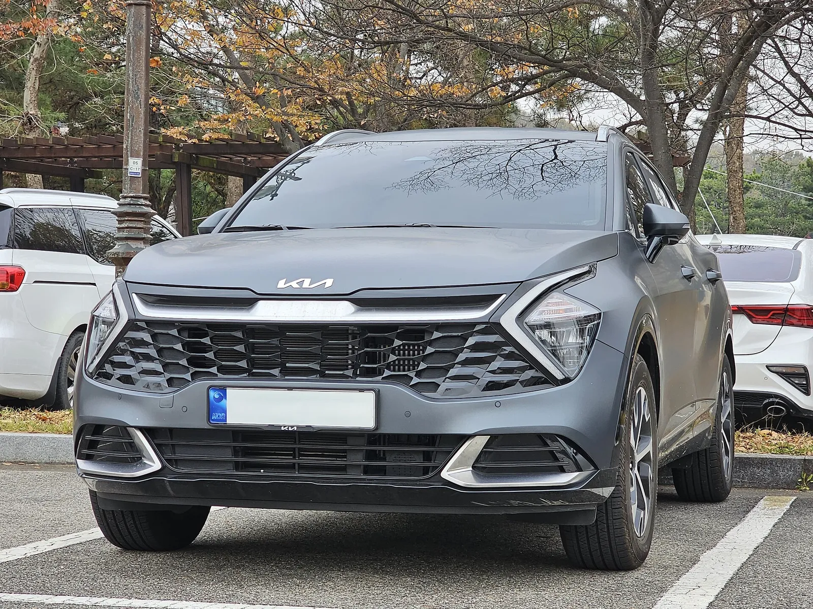
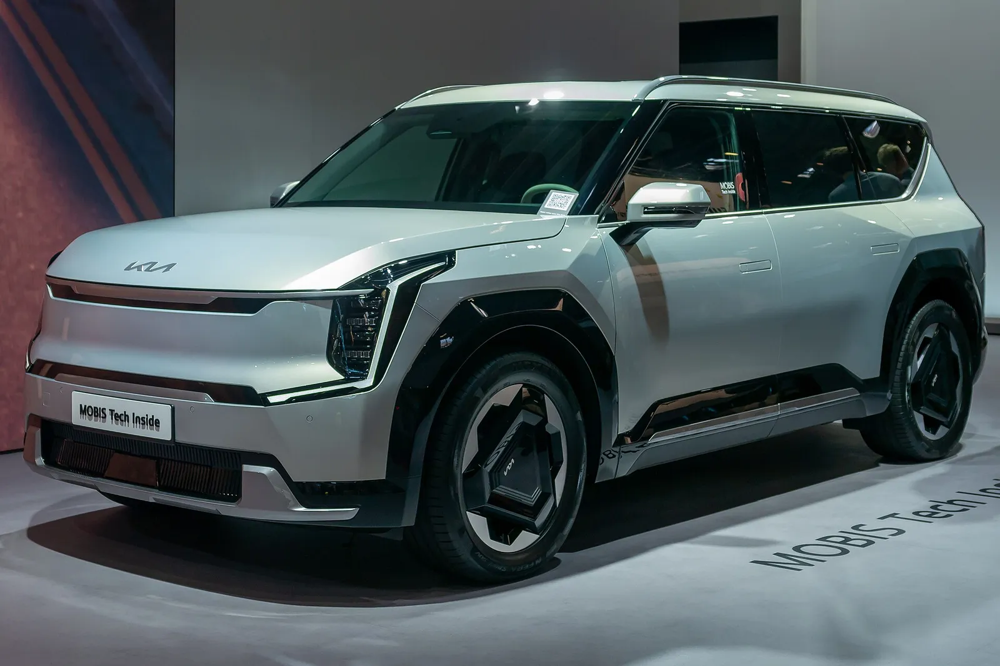
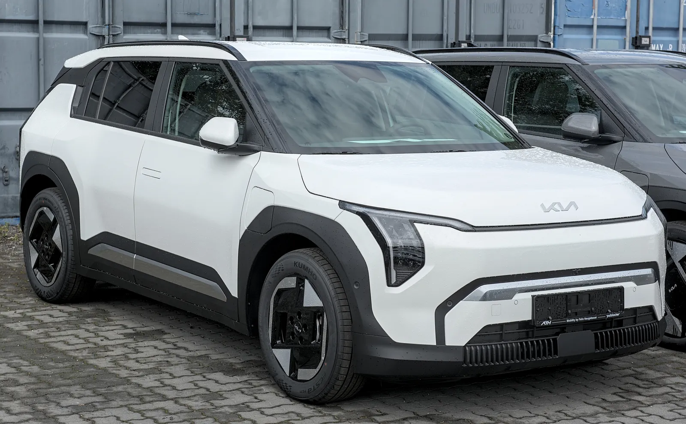
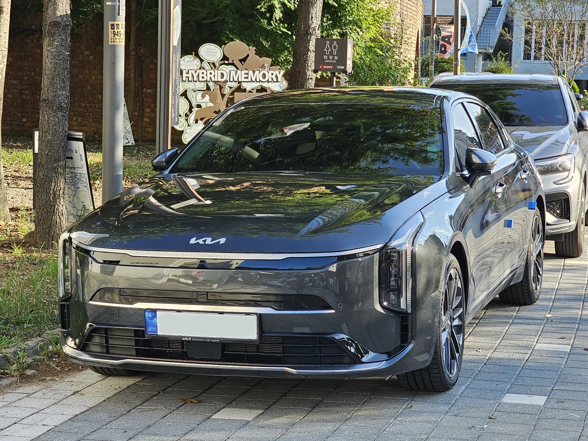

▲ 2018년 3월 서울에서 촬영된 2세대 K3(BD). 9월 시세 리포트의 '올 뉴 K3'는 이 세대를 가리키는 것으로 보인다 ⓒ Navigator84 (Wikimedia Commons, CC BY-SA 4.0)
"국산차 시세는 0.5% 내렸는데 기아만 0.1% 올랐다." 10월 초 쏟아진 이 보도는 얼핏 '9월 신차 판매'로 읽히기 쉽다. 하지만 이 숫자는 판매 대수가 아니라 중고차 평균 시세의 전월 대비 변동률이다. 케이카(KG모빌리티플랫폼)가 10월 2일 낸 9월 시세 분석을 뉴스핌·세계일보·헤럴드경제·글로벌경제신문이 보도했고, 오토트리뷴(10월 4일)도 같은 내용을 다뤘다. 카프리즘은 보도마다 조금씩 다르게 실린 수치를 대조하고, K3·K5의 시세가 실제로 얼마나 움직였는지 직접 계산해 정리했다. 5사 신차 판매 합계는 9월 완성차 판매 기사에서 다뤘으므로 여기서는 반복하지 않는다.
1. 전제부터 — "-0.5%·+0.1%"는 무엇을, 무엇과 비교한 값인가
카프리즘이 확인한 기준은 다음과 같다. 케이카는 "국내 중고차 시장에서 유통되는 주요 모델의 9월 평균 시세"를 분석했고, 비교 대상은 8월 평균 시세(전월 대비)다. 전년 동월 비교는 보도 어디에도 없다. 오토트리뷴 기사도 시세 산출 주체를 케이카로 밝히고 전월 대비라고 적었다.
| 항목 | 확인 내용 | 출처 |
|---|---|---|
| 대상 | 중고차 평균 시세(신차 판매 아님) | 케이카 발표, 뉴스핌·세계일보 등 4개 매체 |
| 산출 주체 | KG모빌리티플랫폼이 운영하는 직영중고차 플랫폼 케이카 | 뉴스핌·글로벌경제신문·헤럴드경제 |
| 비교 기준 | 전월(8월) 대비. 전년 동월 비교 없음 | 보도 전반(오토트리뷴 포함) |
| 발표·보도일 | 케이카 10월 2일 발표, 오토트리뷴 10월 4일 입력 | 뉴스핌·세계일보 10월 2일, 오토트리뷴 기사 |
| 모집단·산정 방식 | 연식·주행거리 범위, 매물 수, 단순평균/가중평균 여부 — 보도에 없음 | 확인하지 못했다 |
| 금액 공개 범위 | 모델별 평균 시세 금액은 K3·K5(및 일부 모델)만 보도에 공개 | 헤럴드경제·이데일리 인용 |
📍 케이카 원문은 직접 열지 못했다
이 글의 수치는 케이카 보도자료를 인용한 4개 매체(뉴스핌·세계일보·헤럴드경제·글로벌경제신문)와 오토트리뷴 기사를 교차해 맞춘 것이다. 케이카 사이트의 원 자료(모집단·산정 방식 부록 포함 여부)는 직접 확인하지 못했다. 그래서 "평균 시세를 어떤 매물 기준으로 냈는가"는 단정할 수 없고, 아래 해석은 보도에 실린 범위로 한정한다.
2. 보도별 수치 교차 검증 — 같은 숫자가 맞았다
카프리즘이 확인한 바로는 케이카 발표를 옮긴 매체들의 핵심 수치는 서로 일치한다. 오토트리뷴도 같은 값을 실었다. 다만 매체마다 포함한 모델 수가 다르다. 예컨대 이데일리는 신형 스포티지 하이브리드(+0.9%)까지, 헤럴드경제는 쏘렌토 4세대 하이브리드(+0.4%)·싼타페 TM(-2.9%)·수입차 몇 종까지 적었다.
| 항목 | 케이카 발표 보도(10/2) | 오토트리뷴(10/4) | 판정 |
|---|---|---|---|
| 국산차 평균 | -0.5% | -0.5% | 일치 |
| 수입차 평균 | -0.9% | -0.9% | 일치 |
| 기아 평균 | +0.1%(국내 제조사 중 유일) | +0.1% | 일치 |
| 올 뉴 K3 | +4.6%, 1,132만 원(8월 1,082만 원) | +4.6% | 일치(금액은 오토트리뷴 요약에서 확인하지 못함) |
| 더 뉴 K5 3세대 | +4.5%, 2,469만 원(8월 2,363만 원) | +4.5% | 일치(금액은 오토트리뷴 요약에서 확인하지 못함) |
| 더 뉴 카니발 4세대·더 뉴 셀토스 | 각 +1.1% | 각 +1.1% | 일치 |
| 국산 디젤 평균 | -0.8% | -0.8% | 일치 |
| 기아 전기차 평균·BYD 평균 | +0.3% · -1.3% | +0.3% · -1.3% | 일치 |
✔ 수치 확인 메모
K3·K5의 8월 평균 시세(1,082만·2,363만 원)는 이데일리·글로벌경제신문 보도에 실린 값이며, 이데일리·세계일보 등이 8월 값까지 실었다. 일부 자동 요약에서 금액 단위가 어긋나 보이는 사례가 있었으나, 한글 보도 기준(만 원 단위)으로 계산하면 상승률 4.6%·4.5%와 정확히 맞는다(다음 장 참고). 오토트리뷴 본문은 요약 형태로만 확인했으므로 오토트리뷴의 세부 표현은 원문과 다를 수 있다.
3. K3·K5가 실제로 얼마 올랐나 — 금액 환산과 기아 평균에 미친 영향
상승률만 보면 "4%대"지만 금액으로 바꾸면 체감이 다르다. 8월·9월 평균 시세로 직접 계산했다.
| 모델 | 8월 평균 | 9월 평균 | 증가액 | 계산식 | 보도 상승률 |
|---|---|---|---|---|---|
| 올 뉴 K3 | 1,082만 원 | 1,132만 원 | +50만 원 | 50 ÷ 1,082 = 4.62% | +4.6% |
| 더 뉴 K5 3세대 | 2,363만 원 | 2,469만 원 | +106만 원 | 106 ÷ 2,363 = 4.49% | +4.5% |
| (참고) 증가액 비교 | — | — | K5가 K3의 약 2.1배 | 106 ÷ 50 = 2.12 | 같은 4%대지만 금액은 2배 |
두 모델 모두 반올림 기준으로 보도 상승률과 계산값이 맞는다. 즉 보도 수치의 내부 정합성은 확인된다. 다만 이는 평균 시세가 한 달 새 올랐다는 뜻이지, 같은 차를 가진 사람의 차값이 그만큼 올랐다는 보장은 아니다(4장에서 설명).
이제 질문: "기아 전체 +0.1%에서 K3·K5가 얼마나 기여했나?" 결론부터 말하면 직접 계산할 수 없다. 케이카가 기아 평균을 단순평균으로 냈는지 거래·매물량 가중평균으로 냈는지, 모델별 비중이 얼마인지 보도에 없기 때문이다. 대신 가정을 둔 민감도 계산만 가능하다.
| 시나리오 | 가정 | K3·K5 가중치 합(w) | 계산식 |
|---|---|---|---|
| A. K3·K5만 움직였다고 가정 | 다른 모델 변동 0, 기아 평균 +0.10% | 약 2.2% | 0.10 ÷ 4.55 = 2.2%(4.55%는 K3 4.6%·K5 4.5%의 단순평균) |
| B. 반올림 하단 | 기아 평균 실제 +0.05% | 약 1.1% | 0.05 ÷ 4.55 = 1.1% |
| C. 반올림 상단 | 기아 평균 실제 약 +0.15%(반올림 상한 근사) | 약 3.3% | 0.15 ÷ 4.55 = 3.3% |
| D. 현실적 보정 | 카니발·셀토스(+1.1%)와 하이브리드·EV도 올랐으므로 K3·K5 몫은 A보다 작다 | 2.2% 미만 | 구체 값 산출 불가 |
다시 말해 K3·K5가 기아 전체 시세 풀의 2~3% 수준만 차지해도 +0.1% 상승은 설명될 수 있다. 반대로 비중이 이보다 크면 다른 기아 모델 일부가 내렸다는 뜻이다. 어느 쪽인지는 이번 보도로는 알 수 없다. "K3·K5가 기아 평균을 끌어올렸다"는 표현은 방향은 맞지만 몇 %p를 기여했는지는 확인하지 못했다.

▲ 3세대 K5(DL3) 1.6T 흑색 차량(작성자 설명 기준). 촬영 연식과 부분변경 여부는 확정하지 않았다 ⓒ Damian B Oh (Wikimedia Commons, CC BY-SA 4.0)
4. '올 뉴 K3'는 어떤 차인가 — 신차로는 이미 사라진 세대의 시세를 읽는 법
헷갈리기 쉬운 부분이다. 시세 리포트의 '올 뉴 K3'는 2018년 출시된 2세대(BD) K3의 초기형으로 보인다(모델명 기준 필자 해석이며 케이카가 세대를 따로 밝힌 것은 아니다). 풀체인지로 나온 올 뉴 K3는 시작가 1,590만 원대로 소개됐고(이투데이 보도), 이후 부분변경 모델 '더 뉴 K3'가 1,738만 원부터로 나왔다(게차 보도). 이번 케이카 리포트에는 더 뉴 K3 시세가 실리지 않았다. 올 뉴 K3 평균이 1,132만 원이라는 점은 연식이 오래된 매물이 많다는 뜻으로 읽을 수 있으나, 매물 구성은 보도에 없어 확정하지 않는다.
또 K3는 생산이 종료된(단산 보도) 모델이다. 시점은 보도마다 갈린다. 전자신문은 2024년 5월 기아가 같은 해 7월 중 화성 1공장의 K3 생산을 단산할 계획이라고 보도했고, 카프리즘 기존 기사(2026 국산 단종 모델 정리)는 2025년으로 적었다. 기아 공식 자료는 직접 확인하지 못했다. 그러므로 이 +4.6%는 "9월에 K3가 많이 팔렸다"가 아니라 이미 시장에 풀려 있는 중고 매물의 평균가가 오른 것이다. K3 신차 판매 증감과는 무관하다.
▲ 전시장 안에서 촬영된 K3 후측면(작성자 설명상 2세대). 시세 리포트의 올 뉴 K3와 같은 세대로 볼 수 있으나 연식·부분변경 여부는 확정하지 않았다 ⓒ Ki hoon (Wikimedia Commons, CC BY-SA 4.0)
📍 '평균 시세가 올랐다'를 읽을 때 주의할 점(필자 해석)
평균 시세 상승은 (1) 같은 조건의 차값이 올랐거나, (2) 비싼 조건(저주행·상태 좋은) 매물이 더 많이 섞였거나, (3) 낮은 가격대 매물이 빠졌을 때도 나타날 수 있다. 오래된 모델일수록 매물 수가 적어 평균이 크게 출렁이기 쉽다. 케이카가 매물 수나 구성 변화를 공개하지 않아 어느 쪽인지는 확인하지 못했다. (2)(3)은 카프리즘의 가능성 제기이며 케이카의 설명이 아니다.
가격이 그대로여도 평균은 오른다 — 구성 효과 계산(필자 가정)
"평균 시세 +4.6%"가 "같은 차의 값이 4.6% 올랐다"와 다르다는 점을 숫자로 확인해 본다. 매물이 저가군과 고가군 두 덩어리로만 이뤄져 있고, 각 군의 가격은 8월과 9월에 전혀 변하지 않았다고 가정한다. 이때 평균을 8월 값에서 9월 값으로 올리려면 고가군 비중(w)이 얼마나 바뀌어야 하는지 역산했다. 저가·고가 가격은 필자가 임의로 둔 값이며 케이카 자료가 아니다.
| 모델 | 가정(저가군/고가군) | 8월 평균 → w | 9월 평균 → w | 필요한 비중 이동 |
|---|---|---|---|---|
| 올 뉴 K3 | 800만 / 1,300만 원 | 1,082만 → 56.4% | 1,132만 → 66.4% | 약 +10.0%p |
| 더 뉴 K5 3세대 | 1,800만 / 2,900만 원 | 2,363만 → 51.2% | 2,469만 → 60.8% | 약 +9.6%p |
| 계산식: 평균 = 저가 + (고가 − 저가) × w, 따라서 w = (평균 − 저가) ÷ (고가 − 저가). 예) K3 (1,082 − 800) ÷ 500 = 0.564, (1,132 − 800) ÷ 500 = 0.664 | ||||
즉 두 모델 모두 고가 매물 비중이 10%p 안팎만 늘어도 평균은 4%대 뛴다. 반대로 같은 시장에서 개별 차값이 그대로여도 저가 매물이 먼저 팔려 나가면 같은 일이 생긴다. 이번 상승이 구성 변화 때문이라는 증거는 없다. 다만 4%대 상승만으로 "내 차값이 4% 올랐다"고 결론내릴 수 없다는 점은 이 계산이 보여 준다. 월별 평균 시세 흐름의 다른 해석은 8월 중고차 시세 기사, 모델별 인기 순위는 인기 중고차 TOP10 기사에서 볼 수 있다.
| 내 차 현재 시세 가정 | K3 +4.6% 적용 | K5 +4.5% 적용 |
|---|---|---|
| 800만 원 | +36.8만 원 | +36.0만 원 |
| 1,000만 원 | +46.0만 원 | +45.0만 원 |
| 1,200만 원 | +55.2만 원 | +54.0만 원 |
| 1,500만 원 | +69.0만 원 | +67.5만 원 |
계산식은 시세 × 상승률이다. 위 구성 효과가 섞여 있을 수 있으므로 이 값은 어디까지나 '최대치에 가까운 참고용'이다.
5. 유종별로 갈린 시장 — 하이브리드·EV·디젤 표로 보기
기아 상승의 폭은 세단에 몰렸지만, 상승이 세단만의 일은 아니었다. 케이카 자료를 모델별로 정리했다. 표의 "단순평균"은 필자가 보도에 실린 모델만 평균 낸 값이며 케이카 공식 평균이 아니다.
| 모델 | 변동률 |
|---|---|
| K5 3세대 하이브리드 | +2.6% |
| 더 뉴 K5 3세대 하이브리드 | +1.8% |
| K8 하이브리드 | +1.8% |
| 디 올 뉴 스포티지 하이브리드 | +0.9% |
| 쏘렌토 4세대 하이브리드 | +0.4% |
| 보도된 5개 단순평균(필자 계산) | +1.5% ((2.6+1.8+1.8+0.9+0.4) ÷ 5 = 1.5) |

▲ K5 하이브리드(DL3 HEV) 흰색 차량(작성자 설명 기준). 시세 리포트 대상 세대와 동일한지는 확정하지 않았다 ⓒ Damian B Oh (Wikimedia Commons, CC BY-SA 4.0)

▲ 시세 +0.9%를 기록한 스포티지 하이브리드(NQ5, 작성자 설명 기준). 이번 시세 대상 연식과 같은지는 확정하지 않았다 ⓒ Damian B Oh (Wikimedia Commons, CC BY-SA 4.0)
| 모델 | 변동률 |
|---|---|
| 국산 디젤 평균 | -0.8% |
| 더 뉴 모하비 | -6.6% |
| 더 뉴 i40 | -6.2% |
| QM6 | -5.3% |
| 싼타페 TM | -2.9% |
| 더 뉴 카니발 | -2.6% |
| 보도된 5개 모델 단순평균(필자 계산) | -4.7% ((6.6+6.2+5.3+2.9+2.6) ÷ 5 = 4.72) |
눈에 띄는 격차가 있다. 보도된 디젤 5개 모델의 단순평균은 -4.7%인데 국산 디젤 전체 평균은 -0.8%다. 보도에는 하락폭이 큰 모델을 골라 실었을 가능성이 있고, 이 경우 나머지 디젤 모델은 더 완만하거나 오른 셈이다(필자 추정, 케이카 설명 없음). 또 같은 보고서에서 '더 뉴 카니발 4세대'는 전체 +1.1%인데 '더 뉴 카니발'은 디젤 목록에서 -2.6%로 나온다. 두 항목의 범위가 같은지 보도로는 확인하지 못했지만, 같은 카니발이라도 유종에 따라 방향이 달랐을 가능성을 보여주는 대목이다.
▲ 디젤 시세 낙폭이 가장 컸던 모하비(구형 외관 사진, 작성자 설명은 V6 3.0 VGT). 시세 대상 '더 뉴 모하비'와 같은 외관인지는 확정하지 않았다 ⓒ Damian B Oh (Wikimedia Commons, CC BY-SA 4.0)
| 브랜드·모델 | 변동률 | 비고 |
|---|---|---|
| 기아 전기차 평균 | +0.3% | 케이카 공식 평균 |
| 기아 EV4 | +2.9% | — |
| 기아 EV5 | +2.6% | — |
| 기아 EV9 | +1.9% | — |
| 기아 EV3 | +1.7% | — |
| (참고) EV3·4·5·9 단순평균 | +2.3% | 필자 계산: (2.9+2.6+1.9+1.7) ÷ 4 = 2.28 |
| 현대차·테슬라 | 보합 | — |
| BYD 브랜드 평균 | -1.3% | — |
| BYD 아토3 | -3.8% | — |
| BYD 돌핀 | -2.2% | — |

▲ 시세가 +1.9% 오른 기아 EV9(독일 뮌헨 모터쇼 전시차, 국내 판매 사양과 같은지는 확정하지 않았다) ⓒ Matti Blume (Wikimedia Commons, CC BY-SA 4.0)
▲ 시세가 +2.6% 오른 기아 EV5(중국 도로에서 촬영된 사진으로 국내 사양과 다를 수 있다) ⓒ JustAnotherCarDesigner (Wikimedia Commons, CC0)
기아 전기차 평균(+0.3%)과 네 개 모델 평균(+2.3%)의 차이는 보도되지 않은 다른 기아 전기차(EV6·니로 EV·레이 EV 등)가 내렸거나 보합이었을 가능성을 시사한다(필자 추정, 확인하지 못했다). EV 신차 판매는 9월 EV 판매 기사에서 다뤘다.

▲ 시세가 +1.7% 오른 기아 EV3(독일에서 촬영된 사진) ⓒ Alexander Migl (Wikimedia Commons, CC BY-SA 4.0)
6. 왜 올랐나 — 근거 있는 것과 없는 것을 갈라 본다
보도 제목들은 "K3·K5가 오른 이유"를 궁금하게 하지만, 케이카가 직접 밝힌 이유는 짧다. 케이카는 연비와 실용성을 중시하는 수요가 중고차 가격을 뒷받침했다고 분석했다(헤럴드경제·이데일리). 별도로 조은형 KG모빌리티플랫폼 PM팀 애널리스트는 "9월 중고차 시장은 전반적으로 시세가 안정되는 가운데, 기아 인기 모델과 하이브리드를 중심으로 견조한 흐름을 보였다"고 말했다. 이 설명은 하이브리드에는 잘 맞지만 가솔린 K3 +4.6%를 직접 설명하지는 못한다.
| 후보 | 근거 수준 | 내용 |
|---|---|---|
| 연비·실용성 수요 | 케이카 직접 언급 | 하이브리드 상승에 대한 설명. K3 가솔린 상승 설명으로는 불충분 |
| 기아 인기 모델 견조 | 케이카 애널리스트 발언 | 추가 근거(거래 속도·매물 수 등)는 공개되지 않음 |
| 신차 출고 대기 지연 | 근거 약함 | 기아 9월 납기표에서 K5는 한 달 안팎(카프리즘 9월 10일 기사). 대기가 길어 중고로 수요가 몰렸다고 보기 어렵다 |
| 신차 프로모션 | 시세 상승과 방향이 맞지 않음 | 9월 K5 신차 혜택은 최대 150만 원(카프리즘 9월 프로모션 정리). 신차가 싸지면 중고엔 하방 압력이 일반적이므로 상승 원인으로 쓰기 어렵다(필자 해석) |
| K3 단종에 따른 희소성 | 확인 못 함 | 케이카가 언급하지 않음. 가능성은 있으나 추정일 뿐 |
| 매물 구성 변화 | 확인 못 함 | 모집단 비공개. 4장의 (2)(3) 가능성 |
| 기아 신차 판매 호조 | 시기만 일치 | 헤럴드경제가 같은 기사에서 기아 9월 국내외 합계(헤럴드경제 표기) 28만 1,984대(+5.1%)를 병기했을 뿐 케이카가 인과로 설명하지 않음 |
정리하면 "생산 일정·신차 효과·프로모션이 K3·K5 시세를 올렸다"는 서술은 카프리즘이 확인하지 못했다. 신차 쪽 요인은 오히려 시세 상승과 맞지 않거나 확인되지 않는다. 카프리즘이 확인한 인과 설명은 케이카가 밝힌 연비·실용성 수요가 전부이고, 나머지는 열린 질문이다. 기아 신차 납기는 기아 9월 납기표 기사, 9월 구매 혜택은 9월 프로모션 정리에서 볼 수 있다.

▲ 시세가 +1.8% 오른 K8 하이브리드(GL3 PE, 작성자 설명 기준). 이번 시세 대상과 연식이 같은지는 확정하지 않았다 ⓒ Damian B Oh (Wikimedia Commons, CC BY-SA 4.0)
✔ 한 달 변동을 추세로 읽지 말 것
- 이번 비교는 8월 대비 9월, 단 한 달이다. 전년 동월 비교가 없어 "기아 시세가 오르는 추세"라고 말할 수 없다.
- 카프리즘 기존 기사 8월 중고차 시세(테슬라 반등)에서는 8월 상승 주역이 테슬라였다. 월마다 주인공이 바뀐 만큼 9월 기아 흐름이 이어질지는 알 수 없다.
- 3분기 중고차 시장 양극화 기사가 짚은 대로 하이브리드는 방어, 대형 SUV·디젤은 약세라는 큰 방향은 이번 9월 수치와 결이 같다.
7. "내 차는 어떻게 되나" — 시세 확인·판매 시점 체크리스트
평균 시세 보도를 보고 "지금 팔아야 하나"를 판단할 때 무엇을 봐야 하는지 정리했다. 거래 플랫폼 간 가격 차이는 플랫폼별 시세 비교 기사, 매매단지·경매 앱 매입 구조는 딜러 vs 플랫폼 매입 기사에서 다뤘으므로 여기서는 이번 보도에 해당하는 점만 짚는다.
| 순서 | 확인할 것 | 이유 |
|---|---|---|
| 1 | 내 차의 정확한 세대·유종 확인(예: '올 뉴 K3'인가 '더 뉴 K3'인가, 가솔린인가 하이브리드·디젤인가) | 같은 모델명도 세대·유종별로 시세 방향이 달랐다(5장). 케이카 애널리스트도 같은 취지로 조언 |
| 2 | 평균 상승률을 내 차 금액에 대입한 금액을 그대로 내 차 시세로 보기 | K3 평균 +4.6%는 약 50만 원이지만 평균이며, 내 차 연식·주행·사고 이력이 다르면 달라진다 |
| 3 | 2~3곳에서 같은 날 견적 비교 | 플랫폼마다 모집단이 달라 같은 달에도 수치가 다르다 |
| 4 | 한 달 데이터로 '지금이 정점'이라고 단정하지 않기 | 전년 동월 비교가 없고 모집단이 비공개이므로 추세 판단 근거가 부족 |
| 5 | 10월 시세 발표(11월 초 예상)와 비교해 판단 | 단월 변동은 반등·하락이 번갈아 나타날 수 있다. 발표 시점은 예상이며 확정된 일정은 아니다 |
| 6 | 디젤·BYD 같은 약세 군은 다음 달에도 약할지 점검 | 9월 약세군은 하락폭이 컸다(모하비 -6.6%, 아토3 -3.8%). 다만 다음 달 방향은 알 수 없다 |
팔 때의 현실적 팁도 한 줄 덧붙인다. 평균 시세는 '광고된 매물 가격'에 가까워서, 내 차를 딜러에게 넘길 때 받는 매입가와는 다를 수 있다. 매입가와 평균 시세의 격차는 이번 케이카 자료로는 알 수 없다.
자주 묻는 질문
| 질문 | 답 |
|---|---|
| 기아 +0.1%면 기아 차는 다 올랐나? | 아니다. 같은 보도 안에서도 더 뉴 카니발 디젤(-2.6%)·모하비(-6.6%)처럼 내린 모델이 있다. 평균은 오른 모델과 내린 모델의 합이다. |
| K3는 생산 종료 보도가 있었는데 왜 시세가 오르나? | 희소성 때문일 수 있다는 추정은 가능하나 케이카가 언급하지 않았다. 구성 효과 가능성도 있어 확정하지 않는다. |
| 지금 팔면 이득인가? | 한 달 변동만으로 판단하기 어렵다. 내 차 세대·유종·주행거리로 2~3곳 견적을 같은 날 비교하는 편이 낫다. 매입 구조는 딜러 vs 플랫폼 매입 기사를 참고하면 된다. |
| 다른 플랫폼 수치와 왜 다른가? | 모집단과 산정 방식이 다르기 때문이다. 엔카의 9월 흐름은 엔카 9월 시세 기사에서 따로 다뤘다. |

▲ 시세 +1.1%를 기록한 카니발 4세대(KA4). 디젤 목록의 '더 뉴 카니발'은 -2.6%로 유종별 방향이 갈렸다 ⓒ Benespit (Wikimedia Commons, CC BY-SA 4.0)
8. 요약
"국산차 -0.5%, 기아 +0.1%"는 신차 판매가 아니라 케이카가 발표한 9월 중고차 평균 시세의 전월 대비 변동률이다. 수치는 케이카 발표를 옮긴 4개 매체와 오토트리뷴이 서로 일치했다.
올 뉴 K3(1,082만→1,132만 원, +50만 원)과 더 뉴 K5 3세대(2,363만→2,469만 원, +106만 원)는 4%대 상승했지만, 기아 평균 +0.1%에 대한 기여도는 비중 자료가 없어 계산할 수 없다. K3·K5가 기아 시세 풀의 2~3% 수준이면 설명되는 정도다(필자 가정).
상승 이유로 케이카가 직접 밝힌 것은 연비·실용성 수요뿐이며, 신차 대기·프로모션·단종 영향은 근거를 확인하지 못했다. 하이브리드는 올랐고 디젤과 BYD는 내렸다. 한 달치 평균이므로 내 차 매각은 세대·유종·견적 비교로 판단해야 한다.